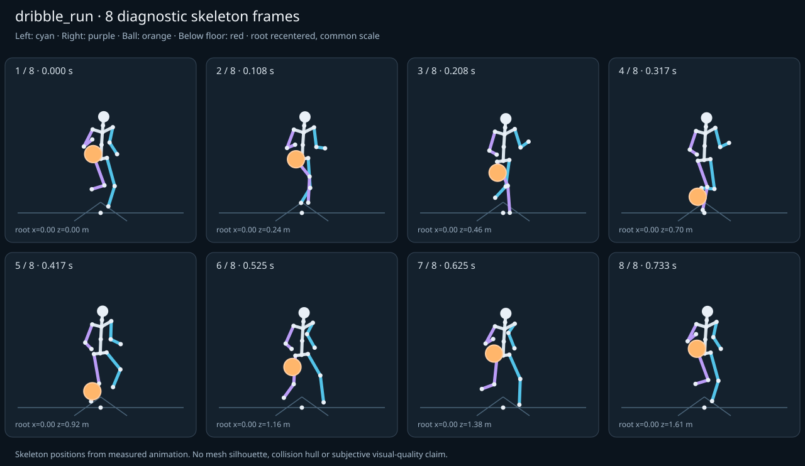

כל הקליפים · תצוגת התנועה · JSON מקורי
ציון 92.2 · כיסוי 100%
נתוני motion-qa-v1 המקוריים; עיצוב הדוח בלבד הותאם לחבילה. נקודות הסוליה נמדדות בתרחיש שחקן חיצוני מוצהר; Root בנכס נשאר קבוע.

| מדד | מצב | ערך | ציון | ראיות |
|---|---|---|---|---|
| החלקת רגליים | ירוק | 0.00013 | 99.74 | ראיות המדידה{
"coordinateSpace": "native GLB plus explicitly declared external actor position and heading, applied once",
"supportSource": "declared",
"windows": 3,
"samples": 75,
"maxDriftMeters": 0.00022,
"p95SpeedMetersPerSecond": 0.015054,
"worst": {
"bone": "LeftFoot",
"t": 0.15,
"start": 0,
"end": 0.16,
"driftMeters": 0.00022
}
} |
| חדירה לרצפה | ירוק | 0 | 100 | ראיות המדידה{
"samples": 1820,
"floorY": 0,
"probeKind": "declared sole probes plus skeletal joint centers (no mesh surfaces)",
"maxDepthMeters": 0,
"worst": {
"t": 0,
"bone": "LeftFoot",
"depthMeters": 0,
"y": 0.004
}
} |
| קפיצות פוזה | צהוב | 1.182028 | 76.36 | ראיות המדידה{
"adjacentPairs": 90,
"observations": 1530,
"maxDegrees60Hz": 11.474303,
"maxMarkerStepHeight60Hz": 0.047281,
"maxRootStepHeight60Hz": 0.021696,
"worst": {
"ratio": 1.1820280876604994,
"t": 0.366667,
"previousTime": 0.358333,
"bone": "LeftLeg",
"markerStepHeight60Hz": 0.047281,
"degrees60Hz": 5.341211
}
} |
| חריגות אנטומיות | ירוק | 0 | 100 | ראיות המדידה{
"testedFrames": 91,
"affectedFrames": 0,
"checks": 1547,
"maxLimbFlexionDegrees": 116.945496,
"maxRelativeSegmentLengthChange": 0,
"hingeDirectionChecked": true,
"axialTwistChecked": false,
"violations": []
} |
| מגע בכדור | ירוק | 0.000001 | 100 | ראיות המדידה{
"radiusMeters": 0.12,
"samples": 2,
"missed": [],
"contacts": [
{
"t": 0,
"bone": "RightHand",
"gapMeters": 0.000001,
"signedGapMeters": 0.000001,
"centerDistanceMeters": 0.120001,
"contactPoint": [
-0.29,
1.040001,
0.29
],
"ballCenter": [
-0.29,
0.92,
0.29
],
"declaredLocalPoint": true
},
{
"t": 0.733333,
"bone": "RightHand",
"gapMeters": 0.000001,
"signedGapMeters": 0.000001,
"centerDistanceMeters": 0.120001,
"contactPoint": [
-0.29,
1.040001,
1.903333
],
"ballCenter": [
-0.29,
0.92,
1.903333
],
"declaredLocalPoint": true
}
],
"contactDetailsTruncated": false,
"coordinateSpace": "native GLB plus explicitly declared external actor position and heading, applied once"
} |
| כניסה ויציאה מול המתנה | צהוב | 2.023222 | 64.65 | ראיות המדידה{
"entry": {
"ratio": 2.0232216222377692,
"t": 0,
"idleTime": 3.766667,
"markers": 17,
"rmsPositionHeight": 0.080929,
"rmsRotationDegrees": 36.209422,
"rmsVelocityHeightPerSecond": 1.06058,
"velocityEvaluated": true
},
"exit": {
"ratio": 2.0232215896045567,
"t": 0.733333,
"idleTime": 3.766667,
"markers": 17,
"rmsPositionHeight": 0.080929,
"rmsRotationDegrees": 36.209423,
"rmsVelocityHeightPerSecond": 1.06874,
"velocityEvaluated": true
},
"worstEndpoint": "entry",
"alignment": "horizontal root translation; raw asset poses used when provided"
} |
| מהירות גוף מול צעדים | ירוק | 0.000205 | 99.98 | ראיות המדידה{
"rootSource": "sampled presented root",
"rootSpeedMetersPerSecond": 2.2,
"observedRootSpeedMetersPerSecond": 2.2,
"referenceRootSpeedMetersPerSecond": 2.2,
"supportSource": "declared",
"backwardSweepSpeedMetersPerSecond": 2.200451,
"cadenceStepsPerSecond": 4.090909,
"impliedStrideMeters": 1.075776,
"rootStrideMeters": 1.075556,
"supportSweeps": [
{
"bone": "LeftFoot",
"start": 0,
"end": 0.16,
"duration": 0.16,
"sweepMeters": 0.352132,
"speedMetersPerSecond": 2.200826
},
{
"bone": "LeftFoot",
"start": 0.6,
"end": 0.733333,
"duration": 0.133333,
"sweepMeters": 0.293333,
"speedMetersPerSecond": 2.2
},
{
"bone": "RightFoot",
"start": 0.233333,
"end": 0.526667,
"duration": 0.293333,
"sweepMeters": 0.645466,
"speedMetersPerSecond": 2.200451
}
]
} |
| סימטריה | ירוק | 0 | 100 | ראיות המדידה{
"mode": "structural",
"modeSource": "declared",
"structuralMismatch": 0,
"segments": [
{
"segment": "Arm-ForeArm",
"mismatch": 0
},
{
"segment": "ForeArm-Hand",
"mismatch": 0
},
{
"segment": "UpLeg-Leg",
"mismatch": 0
},
{
"segment": "Leg-Foot",
"mismatch": 0
}
],
"motionRmsHeight": null,
"worstMotion": null,
"bilateralPoseRmsHeightUnscored": 0.17831,
"note": "One-sided authored actions are checked for structural symmetry only."
} |